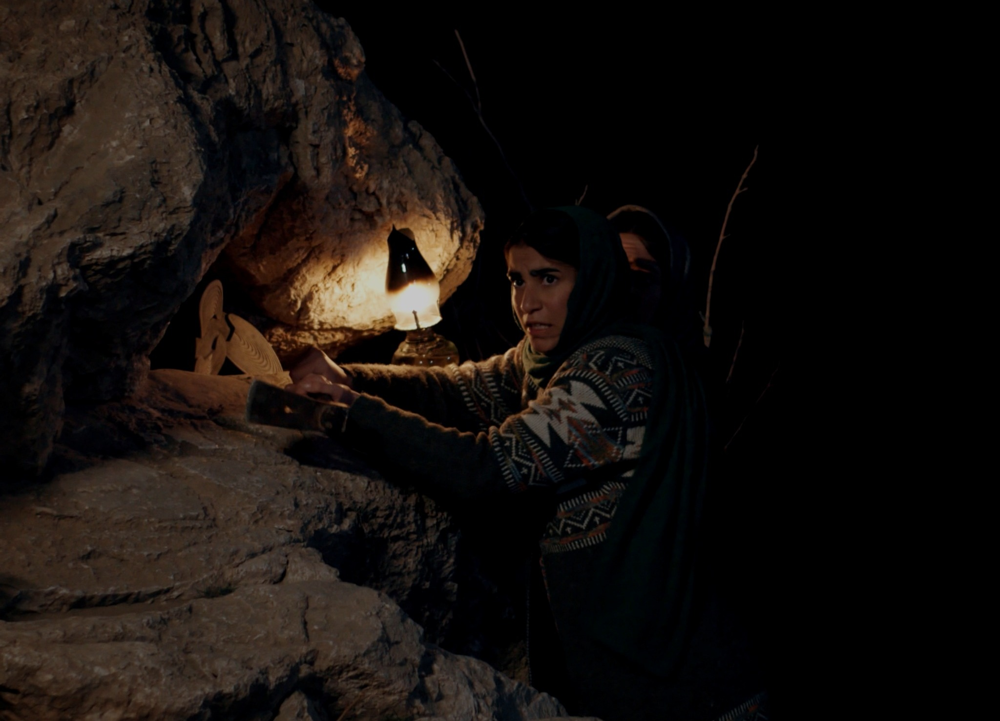
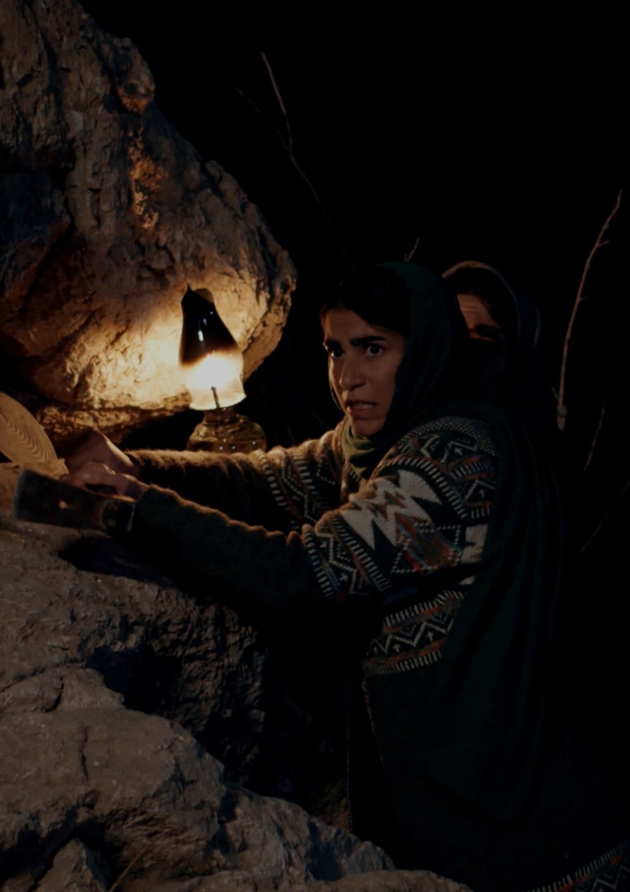
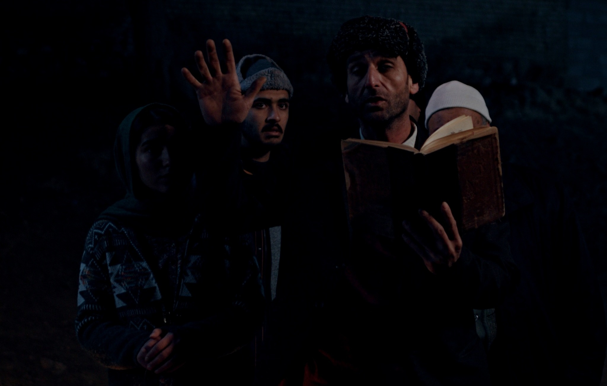
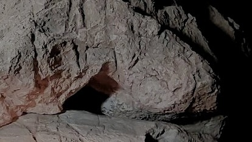

حافظهای که فراموش نمیکند
هر «نه»، هر ارسال، هر ایمیل و هر دلیل تصمیم ثبت میشود.
سیستم نمیگذارد چند ماه بعد همان جشنواره دوباره مثل یک فرصت تازه جلوی شما ظاهر شود.

ما یک فهرست جشنواره نیستیم. برای هر فیلم یک پرونده زنده میسازیم؛ با حافظه تصمیم، پایش موعدها، کنترل تکرار، تحلیل ریسک و مدیریت مسیر پخش.
فیلمساز مستقل با ایمیلهای پراکنده، تاریخهای اعلام نتیجه، قوانین متغیر، درخواستهای معافیت هزینه، خطر ارسال تکراری و تعهدهای حقوقی روبهروست. شبکه سینمای مستقل همه اینها را به یک سیستم تصمیمگیری قابل پیگیری تبدیل میکند.
موعدهای نتیجه با تاریخ شمسی، وضعیت انتظار و کد پیگیری در یک نگاه.
تصمیم قبلی + دلیل + شرط بازگشایی؛ نه یک یادداشت مبهم.
فرصت تازه فقط بعد از کنترل شرایط واقعی فیلم نمایش داده میشود.
وضعیت درخواست، پاسخ، تخفیف و اقدام بعدی در همان پرونده.
تصمیمهای پرریسک بدون تأیید صریح صاحب فیلم جلو نمیروند.
بهجای انبوه داده، فقط اتفاقهایی که امروز واقعاً مهماند.
نسخه آزمایشی فعلی با یک فیلم واقعی تست میشود تا قوانین محصول در میدان واقعی پخش ساخته شوند.

در روستایی دورافتاده که رونقش زمانی به زائران یک سنگ مقدس وابسته بود، ایمان رو به افول است. وقتی مردی درون سنگ گرفتار میشود، عدهای آن را اثبات قدرت سنگ میبینند و عدهای فرصتی برای احیای روستا.


فارغالتحصیل کارگردانی با ۱۲ سال تجربه تدوین آثار داستانی و مستند. «ناگهان برمیخیزد» سومین فیلم داستانی او در مقام کارگردان است؛ تجربه تدوین، نگاه او به ریتم، ساختار و روایت بصری را شکل داده است.
هدف ما روشن است: هیچ فرصت مهمی از دست نرود و هیچ اقدام اشتباهی به اعتبار فیلمساز آسیب نزند.